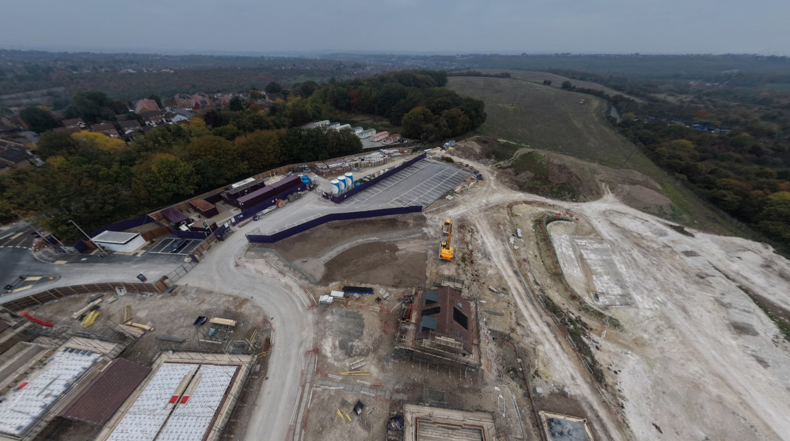
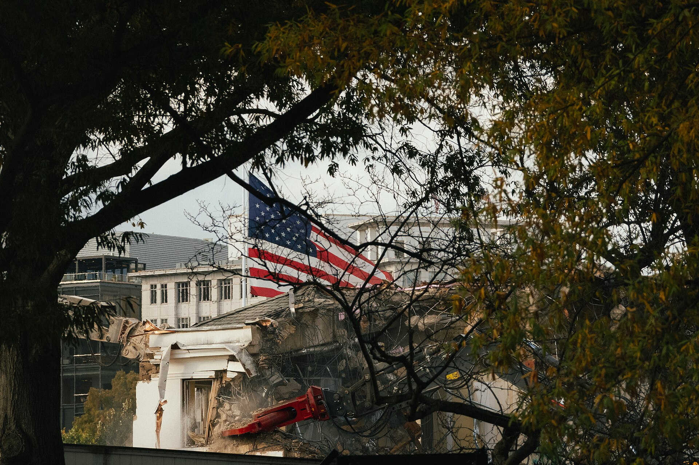
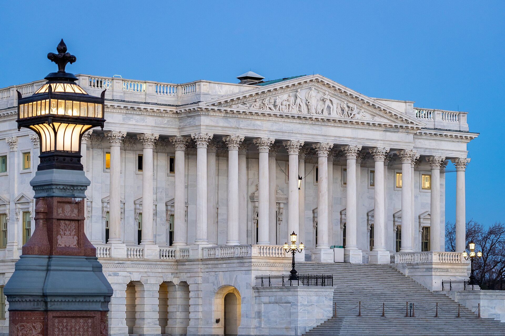

Vol. I · No. 81 · Saturday, August 8, 2026 · 19 items · ~18 min read
Three states bound their armies together in Mecca, payrolls went negative, and the Senate worked past four in the morning.
News · Mecca · cross-spectrum LLLC
Three states sign an Article 5 clause in Mecca, and one of them has nuclear weapons
Mecca. The pact was signed Friday at Al-Safa Palace, inside the precinct of the Great Mosque. — Wikimedia Commons
, Recep Tayyip Erdogan and Shehbaz Sharif signed the Mecca Joint Defence Agreement at Al-Safa Palace on Friday, binding Saudi Arabia, Turkey and Pakistan to treat an armed attack on any one of them as an attack on all three. The operative language, released by Pakistan's foreign ministry rather than in a published instrument, tracks almost word for word: any armed attack "shall be regarded as an attack against them all," intended to "strengthen collective deterrence against any act of aggression." Turkish sources told The New Arab the pact rests on , the collective-self-defence carve-out every such treaty invokes. It extends the bilateral Saudi-Pakistani agreement of September 2025 after roughly a year of negotiation; Egypt joined four-nation talks and was left out of the final document.
What has not been released is the treaty. There is no published text, no disclosed joint command, no planning staff, and none of the response-coordination machinery that makes NATO's clause operational rather than rhetorical. There is also no announced nuclear provision, which is the question the agreement actually raises without answering. Pakistan is the only nuclear-armed Muslim state, Turkey fields NATO's second-largest military, and Saudi Arabia has spent 2026 absorbing Iranian missiles with the Strait of Hormuz effectively closed. Islamabad said in 2025 that nuclear weapons were "not on the radar" in the bilateral pact, and it did not intervene militarily when Iran later struck the kingdom. Signing in rather than Riyadh does a good deal of the work the text does not.
Tehran answered through the legislature rather than the foreign ministry. Ebrahim Rezaei, of the Majlis committee on national security and foreign policy, dismissed the agreement as paper, and Iran's foreign ministry spokesman had issued no formal statement by Friday evening; Foreign Minister Abbas Araghchi called instead for Muslim unity. The same day, the Saudi-led coalition said Houthi fire wounded eleven civilians in Najran, including a four-year-old with second-degree burns, and a source close to the Saudi military told AFP the coalition "will not stand idly by." The pact and the shelling are the same story read from two ends.
"…a paper agreement with Turkey and Pakistan will not bring them security."
— Ebrahim Rezaei, Iranian parliament, August 7
News · Washington · cross-spectrum LLCR
The Senate confirmed Todd Blanche attorney general at 4:31 a.m., 50 to 49
The gavel came down at 4:31 a.m. Eastern on Saturday, at the end of a pre-recess session that also passed a funding bill and a sanctions act. , who had run the department in an acting capacity since Pam Bondi's firing in April, was confirmed with Susan Collins and Lisa Murkowski the only Republicans voting no and Mitch McConnell absent, which set the margin at two defections. Bill Cassidy announced Friday that he would vote yes, and that was effectively the vote.
The two objections that nearly sank it were both institutional rather than partisan. Collins cited "several actions that have further eroded the Department's independence," naming the and a tax immunity deal. The other was Blanche's handling of releases under the ; he told his hearing the department had undertaken "a herculean task to review millions and millions of potentially responsive files" and conceded redaction errors, and he met Epstein accusers before the vote at the demand of a Republican senator whose support he needed.
Corporate · Washington and New York
Payrolls fell 23,000, and the market stopped pricing a September rate rise
July contracted by 23,000 against a consensus of roughly plus 83,000, dragged by 53,000 lost government jobs and softness in retail and leisure. The unemployment rate ticked down to 4.1%, but on falling rather than hiring, and average hourly earnings rose 3.2% year on year, the slowest since May 2021. Rate futures cut the probability of a September hike to 43.9% from 57%, and lifted the odds of a hold to 60.4%.
The word to hold onto is hike. This is a committee arguing about whether to tighten further, not whether to cut: three members dissented in July in favour of an increase, and St. Louis Fed president said Friday he had favoured one, putting underlying inflation at 2.5% to 3% and arguing gradual increases are cheaper than abrupt ones. Equities took the weak print as relief. The S&P 500 closed at a record 7,757.64, up 0.62%; the Nasdaq Composite set its own record at 26,690.62; the Dow added 151.83 to 54,036.93. December gold settled up $100.10 at $4,399.70 an ounce, the cleanest expression of the trade. The ten-year yield fell 1.3 basis points to 4.657%, which on a payrolls day is a whisper.
Artificial Intelligence
A generative model builds a working virus, a lab reopens biology, and Commerce studies the rental loophole
AI · Palo Alto
A language model wrote sixteen working viruses, and the screening system was not built for that
A bacteriophage at atomic resolution. The Stanford and Arc work generated complete phage genomes from scratch. — Wikimedia Commons
A team led by at Stanford and the reported in Science that its Evo models designed complete viral genomes from short starter sequences modelled on the phage phiX174. Roughly 700,000 candidate genomes were generated, 302 were selected for chemical synthesis, 285 were successfully built and introduced into E. coli, and 16 became viable . A cocktail of all sixteen defeated E. coli resistance that had evolved against the natural phage, and one design sits far from anything found in nature.
These are bacteria-killing viruses, not human pathogens, and the alarm is not about this result. It is that a can now author a functioning genome, while DNA-synthesis screening remains voluntary and was designed to flag sequences resembling known pathogens. A sequence no living organism has ever carried is precisely what such a filter is worst at catching. A companion editorial by Johns Hopkins biosecurity specialists ran alongside the paper making the governance point directly. In June, the chief executives of OpenAI, Anthropic and Google DeepMind wrote to Congress asking for mandatory screening of synthetic DNA and RNA orders.
AI · San Francisco
Anthropic cut Fable 5's biology refusals by 85% in the same news cycle
Anthropic said Friday it had reduced biology-related fallbacks in Fable 5 by roughly 85% across product surfaces. The mechanism is worth understanding, because it is not a refusal: when a classifier judges a request to touch safeguarded biology, Fable 5 hands the query to Opus 5, a less capable model, so the user gets a degraded answer rather than a wall. The company rewrote the classifier's constitution, took feedback from internal and external experts, generated training data reflecting the revised rules, and retrained. Interpreting lab results, understanding symptoms, educational biology and clinical support for healthcare professionals now pass. Virology, toxicology and molecular design stay gated, which means the model remains unsuitable for professional biology research.
Anthropic says it is building , a vetted route giving credentialed researchers frontier biology capability without open-ended exposure, and calls itself "fully committed to developing a safe, scalable path for researchers to use our most capable models" through them. The architecture shipped with Fable 5 in June 2026 alongside classifiers for cybersecurity and distillation attempts. The timing against the Stanford result is coincidence, but the pairing is the argument: the same week a model authored a working genome, the leading lab loosened everyday biology while holding domains shut.
AI · Washington
Commerce opens a review of the loophole that lets Chinese labs rent Nvidia chips legally
Bloomberg reported Friday that the Commerce Department's is reviewing how Chinese AI firms reach Nvidia hardware overseas. The vector is renting compute in third countries: the chips never enter China, so no export occurs, and under the existing the arrangement is not clearly unlawful. The division now examining these legal routes is the one that normally investigates violations. The trigger was a run of Chinese capability results demonstrating those firms can use frontier hardware regardless of shipping restrictions.
The authority question is the interesting one, and it is contested: export controls have historically governed the movement of goods, and whether they reach a cloud-services contract is untested. Congress is moving in parallel, with the House having passed the bipartisan to extend controls on Nvidia and AMD chips to rented compute. Late-May rules already required licences for transfers of Blackwell-series parts to entities headquartered in China or Macau, and Nvidia booked no Chinese data-centre revenue in the quarter reported in May. The exposure, if BIS acts, sits with offshore GPU-rental operators and their contracts, not with Nvidia's order book. This is a Bloomberg scoop; the other coverage is aggregation of it.
Markets & Deals
A hostile bid ends in a handshake, a mall REIT buys back its own dilution, and biotech's window stays open
Corporate · Jacksonville and Atlanta
Dream Finders wins Beazer at $33.50, six months after the first bear hug

The combined company will run about 520 active communities across 26 markets. — Wikimedia Commons
Dream Finders Homes agreed Friday to buy Beazer Homes for $33.50 a share in cash, about $916 million of equity and roughly $2.2 billion of enterprise value, at a of about 0.8x. The escalation ladder is entirely on the public record and is the education in it: private proposals at $28.50 in February and $29.00 in March were rejected; a $25.75 proposal on 5 May was made public on 11 May when Beazer traded at $18.77; a revised $32.00 landed on 7 July; the signed number is $33.50. A that lowers its own price and still gets there is not a common sequence.
Financing is committed from Goldman Sachs, Bank of America and affiliates of Kennedy Lewis, and separately committed up to $1.25 billion of land-banking capital so the buyer keeps its model intact. Goldman, BofA, Zelman and Vestra advised Dream Finders with Foley & Lardner on the legal side; J.P. Morgan and Moelis advised Beazer with King & Spalding. Both boards approved unanimously, close is expected in the fourth quarter, and management guided to more than $100 million of run-rate synergies and double-digit first-year EPS accretion. Beazer reported fiscal third-quarter revenue of $516.3 million the same morning, withdrew guidance, and cancelled its 10 August call. Termination fees, any go-shop and the outside date are not in the release and will surface with the merger agreement.
Corporate · Santa Monica
Macerich prints $675 million of exchangeables at 2.25%, then buys the dilution back to 45%
The Macerich Partnership priced $675 million of 2.25% due August 2031 on Friday morning, upsized from $600 million, with a thirteen-day option for $100 million more. The initial exchange rate of 35.4761 shares per $1,000 implies an exchange price of about $28.19, a 20% premium to Thursday's $23.49 close. Concurrently the issuer bought a with a cap of roughly $34.06, a 45% premium, and paid about $39.2 million for it out of $659.1 million of net proceeds.
The rest refinances existing secured debt, which is the real signal. A B-mall REIT swapping mortgage paper for unsecured convertible debt at a 2.25% coupon is a statement about what the credit market will presently fund, and it lands in the same week Southern Company and Procore both printed upsized converts. Settlement mechanics are the standard cash-settled shape: cash up to principal, then issuer's election on the excess, which limits share creation. Call protection runs to 20 August 2029 and then only above 130% of the exchange price. The deal was to institutional buyers and settles 11 August. Neither the initial purchaser syndicate nor issuer's counsel is named in the release.
Corporate · Thousand Oaks
Latigo upsizes to $345.6 million, prices at the top, and pops 17%
Latigo Biotherapeutics priced 19.2 million shares at $18.00, the top of a $16 to $18 range, for $345.6 million gross, and opened on Nasdaq on Friday up about 17%, implying roughly $1.3 billion of market value. The book was originally 16 million shares for about $272 million at the midpoint, so the deal was upsized about 20% on shares and 27% on dollars, and an covers 2.88 million more. Goldman Sachs, Jefferies, Leerink and Guggenheim ran the books, and an registered the incremental shares.
The science is a blocker for non-opioid pain with Phase II data behind it, but the market read is the sequence: upsized and priced at the top and traded up is the strongest three-part signal a book can send, and it came on the same session the payroll print landed. BlossomHill targeted a debut in the same week. Pre-IPO crossover investors, insider indications and lockup length are in the S-1/A rather than the pricing release.
Corporate · South Florida · Florida City
A D.R. Horton land bank paid $28.5 million for 232 lots in Florida City
A acting for , the largest American homebuilder, bought 232 homesites in from Miami-based Trans Florida Development for $28.5 million, about $123,000 a lot. The Real Deal reported the trade Friday and describes the buyer only as a land bank; whether the grantee is Forestar or a third party wants a look at the Miami-Dade deed before anyone names it. The same day's local sheet carried a $15 million Fisher Island condominium and a $14.7 million Margate medical office complex, and MDH Partners returned to South Florida with the 131,800-square-foot Sawgrass Distribution Center in Sunrise.
Law & the Courts
A ballroom stopped in 136 pages, a three-sentence letter rejected, and a salary scale nobody will match
News · Washington · cross-spectrum LLLC
The D.C. Circuit, 2 to 1: the ballroom is Congress's to authorise, not the President's to build

The East Wing during demolition in October 2025. Above-ground construction on the site remains enjoined. — Wikimedia Commons
A divided panel of the D.C. Circuit affirmed a modified on Friday halting above-ground construction of the roughly $400 million ballroom on the demolished East Wing site. Judges and Bradley Garcia formed the majority over a dissent from Judge Neomi Rao, across 136 pages. The line that will be quoted: "Whether or not a massive ballroom should be constructed is for Congress to decide and is not a matter for Executive self-help." The majority took care to say the holding "has nothing at all to do with whether the proposed ballroom is desirable as a matter of policy," and the court stayed its own mandate for fourteen days to permit a petition to the Supreme Court.
Below, Senior Judge Richard Leon had issued the original injunction on 31 March, finding no federal statute "comes close to giving the President" the authority. The plaintiff is the , which sued in December 2025 arguing the demolition itself exceeded presidential authority. Below-ground work continues, including installations the White House characterises as security-related. Trump said Friday he will appeal.
Corporate · Washington
Three lawmakers call Skadden's answer on its $100 million deal a three-sentence letter
Senators Richard Blumenthal and Adam Schiff and Representative Jamie Raskin rejected 's reply to their joint inquiry, saying a "three-sentence letter essentially saying 'nothing to see here' is not going to cut it." The reply is dated 4 August and came from outside counsel Richard Sauber. The underlying arrangement is the firm's agreement to perform $100 million of work on causes the administration supports, in exchange for avoiding an adverse executive order.
The specific theory the lawmakers are pressing is narrower and sharper than the general objection to the deals: a arising from Skadden's work involving Intel while the federal government holds roughly a 10% equity stake in the company and the firm owes an obligation to the administration. Intel shareholders raised the same objection separately in July. Raskin is ranking Democrat on House Judiciary and the inquiry is styled as a joint House and Senate investigation; the two said they would keep "holding Skadden and other firms accountable." Whether a subpoena or a new production deadline has issued is not clear from the free record, and the fuller reporting is paywalled.
Corporate · New York
Biglaw is running out of summer, and Cravath still has not matched Milbank
Milbank opened the 2026 associate pay cycle on 2 June, effective 1 July: ten thousand dollars for the first four classes and twenty thousand for classes five through eight, taking the scale to $235,000 for first-years and $455,000 for eighth-years. Fewer than a handful of firms matched. has matched neither the base scale nor the special bonuses Milbank added in late July, to which Above the Law reports the market response was "even more silent." The mechanism that normally resolves this cycle, in which Milbank moves, the market waits, Cravath matches and everyone follows, has simply stalled.
Milbank has led every major raise since 2016 and has now led one that did not propagate, which is the genuinely new fact. Above the Law's warning is that matching slips past Labour Day. The backdrop is not distress: 2026 Am Law 100 gross revenue came in at $178.95 billion, up 13.0%, with Kirkland first at $10.556 billion and Wachtell profits per equity partner at $12.152 million. Firms that can afford the raise are declining to make it, which is a different signal from firms that cannot. Read against Wednesday's NALP data, showing entry-level hiring at 500-plus firms down 7.5% and now outnumbering new graduates, the pattern is a market paying up for proven bodies and holding the line on unproven ones.
News · South Florida · Fort Lauderdale
Judge Altman freezes the order that would have opened Trump's books to the BBC
Judge stayed a magistrate judge's discovery order requiring production of detailed financial and ownership records of Trump's business empire, citing "careful review," on the day the sensitive financials were due. The stay runs until he resolves Trump's pending the complaint, which would narrow the $10 billion defamation case to personal reputational harm by dropping the business-damage claims. Narrowing the claims narrows the discovery, which is exactly what the BBC told the court the amendment is for.
The underlying suit concerns a 2024 Panorama episode Trump says edited a 2021 speech in a way that was "false, deceptive and defamatory." A provisional two-week trial is set to begin 15 February 2027. Altman has already denied the BBC's motion to stay the case, and separately ordered Trump's personal lawyers to show cause why he should not sanction them for "apparent disregard of court deadlines," so neither side has had an easy run of it. The case number, the magistrate judge's name, and whether the beneficiary of the stay is the Trump revocable trust specifically are not confirmable from the free record and are deliberately not printed here.
The World
A sanctions bill passes 86 to 11, and Madrid gives Rome until Sunday night
News · Washington · cross-spectrum LLCR
The Senate passes the Graham sanctions act 86 to 11, and hands the tariff switch to the President

The Senate cleared the bill, a funding measure and an attorney general in a single pre-recess session. — Wikimedia Commons
The Lindsey O. Graham Sanctioning Russia and Iran Act of 2026 passed 86 to 11 on Friday, renamed for who died last month shortly after returning from Ukraine, and unstuck after fifteen months of stalling. Sixty-one pages. The core authority is permissive rather than mandatory: it lets the President impose tariffs of up to 100% on the five largest purchasers of Russian oil or gas, which in practice means China and India. It layers visa restrictions and asset freezes on Russian officials, banks and figures tied to the arms and energy industries, and it extends the , due to expire this year, at Trump's request during the standoff.
The discretion is the design. A mandate would have forced a tariff on Beijing and New Delhi the day it was signed; an authority the President may or may not exercise is leverage he can hold indefinitely, which is why a bill that sat for over a year moved once it was rewritten that way. The mechanism is , so the pressure travels through refiners and their banks rather than through Moscow directly. The House is in recess until September, so nothing happens before then.
News · Madrid and Rome · cross-spectrum LC
Spain gives Italy until Sunday to lift its border checks, and Meloni refuses
Madrid formally demanded on Friday that Italy end the border controls it imposed on 1 August by the close of Sunday, or Spain would take "proportionate measures to protect the interests and dignity" of its citizens. Giorgia Meloni's answer was that Italy "does not accept ultimatums or directives from abroad regarding national security and border checks," and that the suspension holds at least until 15 August. The checks apply to non-EU nationals arriving from Spain at airports and seaports including Fiumicino, Malpensa and Linate. Spain has since imposed mirror checks on arrivals from Italy, which is where a border dispute becomes a reciprocal one.
The trigger was the 30 July mass crossing at , and the scale figures are genuinely contested, from roughly 6,000 in one account to some 72,000 temporarily crossing in another. Pedro Sánchez wrote to António Costa and Ursula von der Leyen seeking Commission intervention, citing data showing Spain accounted for fewer irregular crossings between 2021 and 2026 than Italy, the Western Balkans route or Greece. Antonio Tajani, who floated the checks, blames Spain's regularisation programme for undocumented migrants. Denmark and Finland back Meloni; Macron sided with Sánchez while strengthening France's own controls at the Spanish land border. Italy has separately suspended open-border arrangements with Slovenia.
Entertainment & EASL
A twenty-year ownership ceiling comes down, a game carries a company's guidance, and Britain waves a merger through
Culture · Washington
The FCC kills the 39% national ownership cap, and replaces it with the chairman's discretion
The Commission split 2 to 1, with Anna Gomez dissenting. — Wikimedia Commons
The Commission voted 2 to 1 to eliminate the barring any owner from reaching more than 39% of American television households, with the reaction and the promised litigation running through Friday. Chairman and Olivia Trusty formed the majority; Anna Gomez dissented, calling the move "unlawful on its face" on the ground that Congress rather than the Commission set the 39% figure, and warning it "will destroy local newsrooms, silence community reporting, and drive-up costs." The cap is replaced by case-by-case review of acquisitions, swaps and transfers.
Replacing a bright-line rule with discretion does not deregulate the market so much as relocate the decision, and it relocates it into the chairman's office. The immediate beneficiary is , whose pending Tegna acquisition would reach roughly 80% of households. Chief executive Perry Sook told his earnings call that repeal removes "a certain level of uncertainty in future M&A" while expecting judicial review, and Sinclair's Chris Ripley welcomed a "more level playing field." That litigation is coming from two directions: a press-freedom group has said it will sue on the statutory-authority question, and the Nexstar-Tegna deal is separately enjoined in an eight-state attorney-general suit with trial set for July 2027 and Ninth Circuit argument expected this quarter.
Culture · New York
Take-Two calls the GTA VI pre-orders unprecedented, and still will not raise the number
Take-Two reported fiscal first-quarter results before Friday's open rather than at four in the afternoon, which is not its convention and set off a day of speculation about a trailer that never came. Quarterly were $1.39 billion, slightly above guidance. The full-year figure was reaffirmed and not raised: $8.0 billion to $8.2 billion for the year ending March 2027, roughly a 20% jump attributed primarily to a single title. called pre-orders "unprecedented" and "astonishing," and declined to give a unit figure.
The gap between those two sentences is the story. Pre-orders opened 25 June, five days inside the reported quarter, at $79.99 standard and $99.99 for the ultimate edition, and called the opening week the strongest in its dataset. If the demand were genuinely running ahead of plan, the guidance is where you would see it, and the guidance did not move. Zelnick defended both the $80 price and the digital-only launch on the call. The release date stands at 19 November 2026 on PlayStation 5 and Xbox Series X and S.
Culture · London
Britain clears Paramount and Warner with binding strings, while the American track stays frozen
The Competition and Markets Authority found no in the UK, and Culture Secretary Lisa Nandy declined to issue a despite having said she was minded to look further. The department cited legally binding commitments from Paramount: editorial independence at , no bundling of linear channels with on-demand services in the UK, and Nickelodeon and Cartoon Network kept distinct from one another. British coverage puts the deal at $81 billion against the $111 billion enterprise framing used in American reporting, a discrepancy worth noticing before quoting either.
Clearance in the sixty-sixth jurisdiction does not help when the first one is stuck. A twelve-state attorney-general suit has halted the transaction, and the Hollywood Reporter's Friday piece on the limbo is the more useful document: stalled greenlights, departing talent, licensing decisions deferred, and roughly 8,500 potential redundancies across CBS News, CNN and the studios hanging on a timetable nobody controls. The Writers Guild's antitrust suit argues the deal removes a major buyer of screenwriting services and suppresses wages; SAG-AFTRA's national board opposed the merger absent production guarantees without joining the suit.
Compiled by Matthew Yellin · mattyellin.com · Est. May 2026 · A cross-spectrum brief drawn each morning from wires, filings, and the trade press